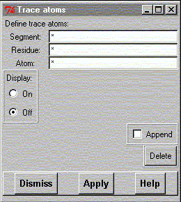

**************************************************************************
Trace Atoms widget
Leif Laaksonen CSC 1996
**************************************************************************
Trace atom(s) or follow up the atom movement through your trajectory file.
Define first the atom(s) to trace and pres the "Apply" button. You can put the display state to "On" by clicking the "On" radio button.
The whole temporary space can be freed by pressing the "Delete" button.

Line command: see trace command
**************************************************************************
LUL/1996
**************************************************************************